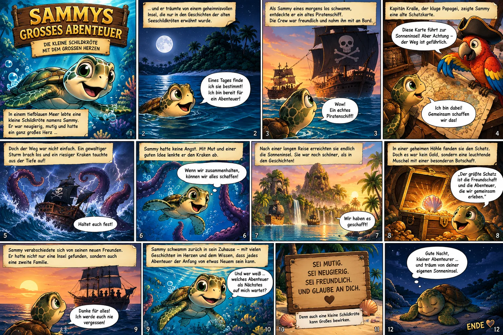
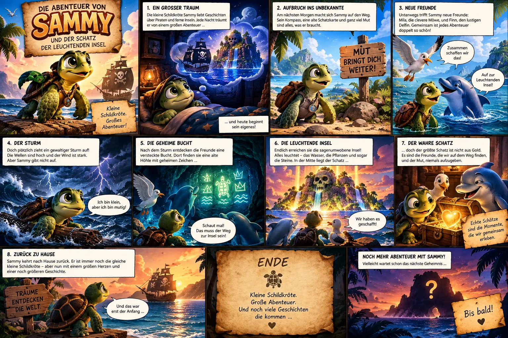
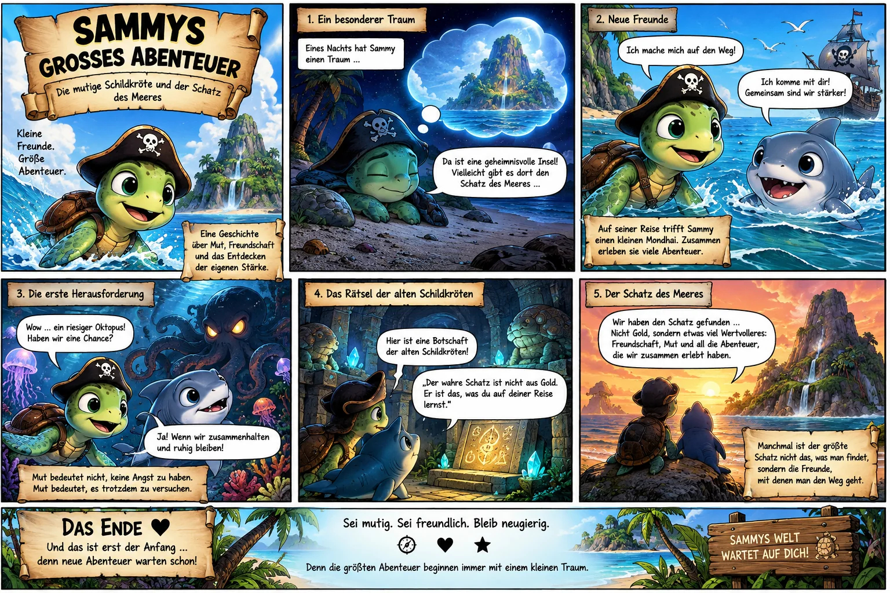

Sams frühe Comic-Entwürfe
Drei Inselabenteuer mit Sammy
Eine Schildkröte sticht in See. Sam und die KI probierten verschiedene Wege zu einer geheimnisvollen Insel aus.
Die Zeichnungen und Sprechblasen sind im deutschen Original zu sehen. Tippe auf eine Seite, um das Bild in voller Größe zu öffnen.


